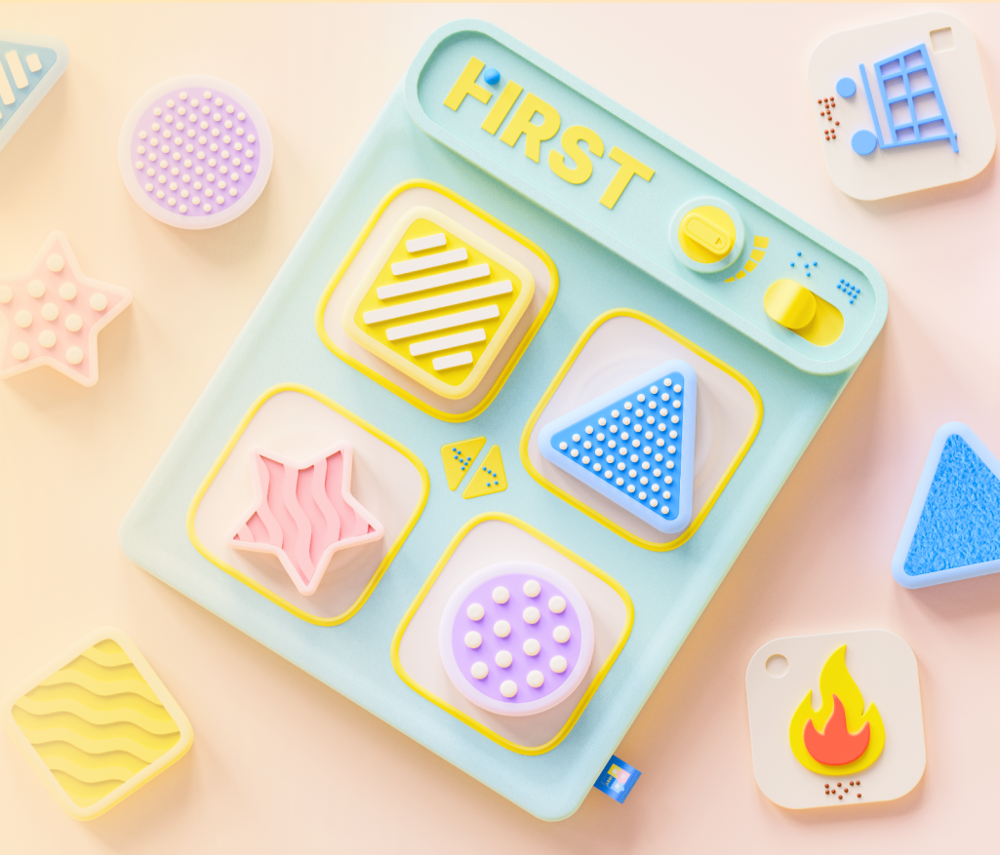
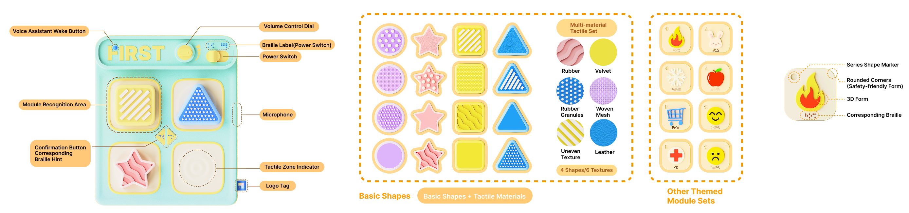
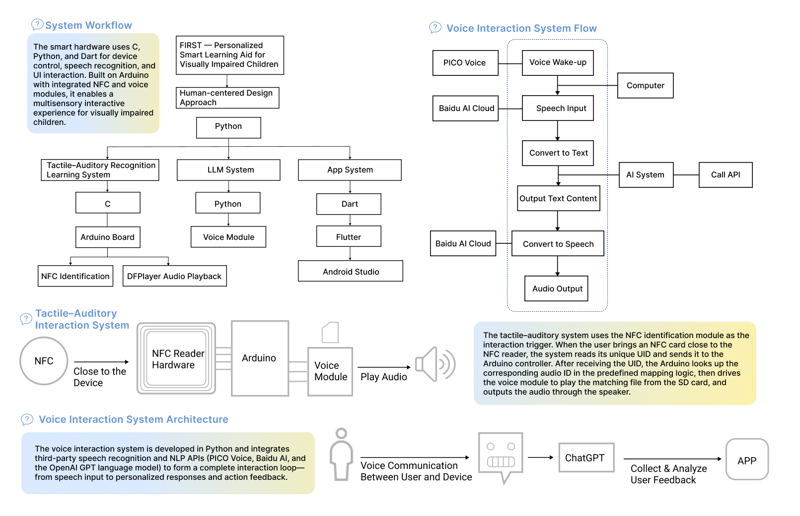
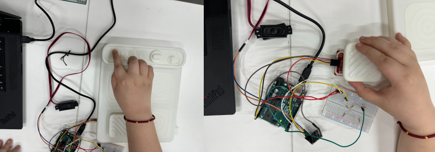
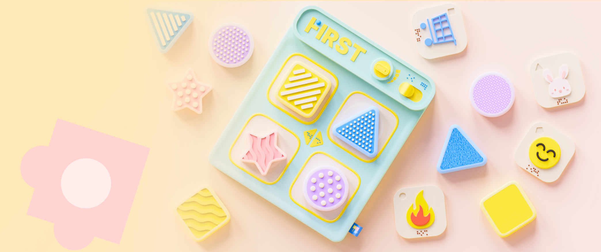

Assistive Technology · Tangible Interaction
FIRST
A multisensory learning system that connects tactile exploration, NFC recognition, and immediate audio guidance for visually impaired children.

Challenge
Many educational interfaces depend on sight. FIRST explores how touch and sound can create a more direct learning loop without requiring a screen.
The design centers on physical modules that children can feel, place, and revisit. Each interaction should be easy to understand, immediately acknowledged, and expandable as the learning content grows.
Tactile first
Shapes, textures, and Braille labels make the board legible through touch.
Immediate response
Audio confirms each recognized module and introduces the associated content.
Expandable content
UID-to-content mapping allows new modules and themed sets to be added.
Prototype
The prototype brings sensing, controls, and audio into one physical learning surface.
My work focused on the NFC sensing loop, UID mapping, audio playback, and the integration of voice guidance. The board also includes direct controls so the core experience remains understandable without relying on the companion interface.

How it works
A physical action becomes a short, repeatable cycle of recognition and spoken guidance.

Outcome & next steps
The working prototype established a repeatable touch → recognition → audio loop and a modular structure for adding new learning content.
The next step is caregiver-assisted testing focused on recognition errors, repeated reads, and the clarity of spoken guidance. This would show which interactions remain reliable outside a controlled demonstration.

